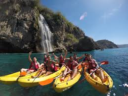
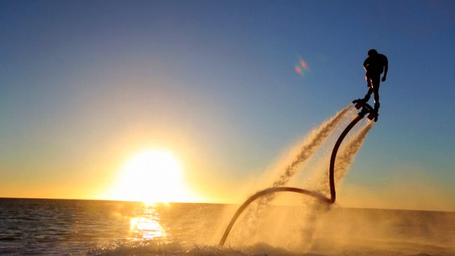

Te proponemos realizar una ruta en Kayak por los Acantilados de Nerja y Maro-Cerro Gordo. Saliendo desde la Playa de Burriana en Nerja. Nuestro recorrido mas popular es el trayecto desde Playa de Burriana hasta la Cascada de Maro.
Esta actividad se encuentra disponible en algunas playas de Benalmádena, Puerto Deportivo de Fuengirola y Marbella.Como curiosidad este accesorio fue inventado en 2012 y se ha hecho popular a lo largo y ancho de todo el mundo.
